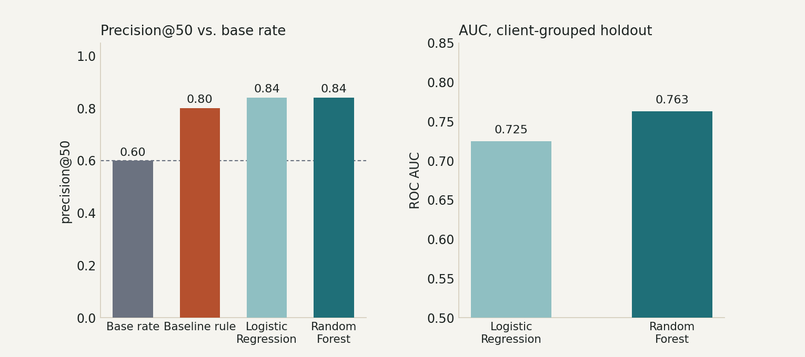
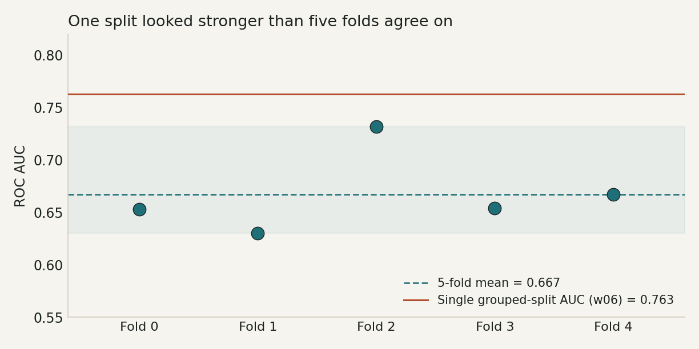
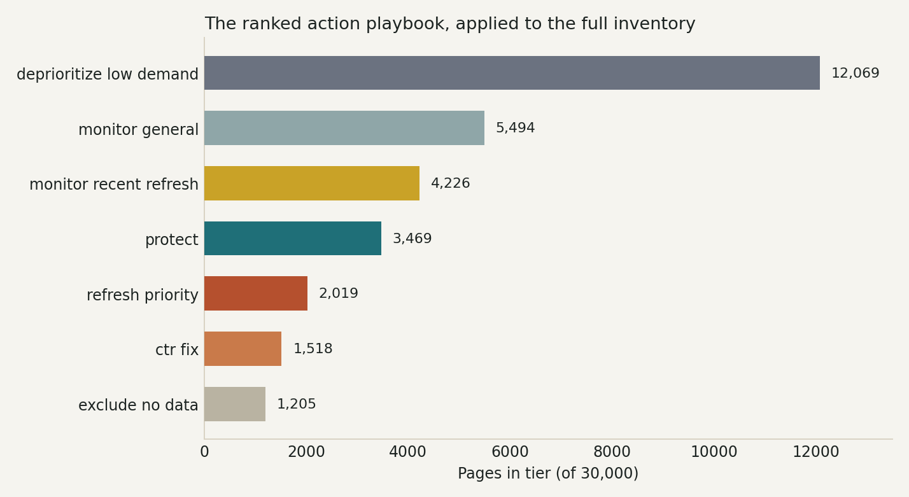
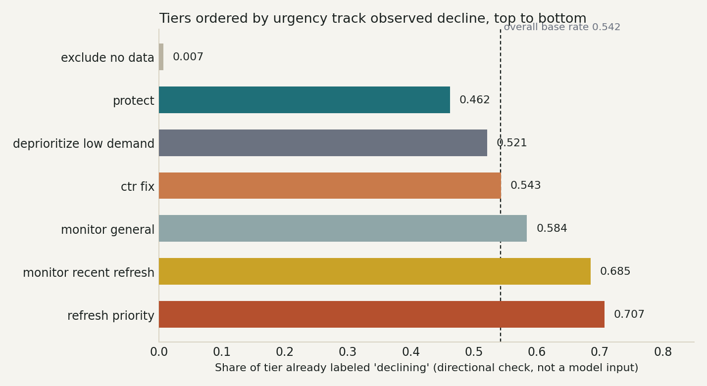

Introduction
A content or SEO team publishes and maintains far more pages than it can manually re-review every week. The real decision a team lead makes over and over is not "is this page good or bad" — it's "of everything in the queue, what do I look at first?" A wrong call in either direction costs something: spending review time on a page that was never actually declining wastes an editor's afternoon, while missing a genuinely declining, high-demand page means a real traffic loss goes unnoticed for another cycle.
This paper covers Lane 2 of the FlyRank ML Internship — Refresh / Content Opportunity Scoring — framed from the start as a ranking problem, not a classification problem. An editor doesn't want a yes/no label on every page; they want an ordered list, with a reason attached to each entry, sized to how much time they actually have. Everything downstream — the metric chosen (precision@50, not accuracy), the validation design (grouped by client, not random), and the final deliverable (a six-tier action playbook, not a single score) — follows from that framing.
The throughline of this work is less "the model works" and more "here's exactly how far you can trust it, and why." The most useful finding in this paper isn't the model's precision number — it's that a single train/test split told a more optimistic story than five splits agreed on, and that the ordinary-looking metric (AUC) hid it while the deployment-relevant metric (precision@50) exposed it.
Data
Two data sources were used at different stages of this work, and it matters which is which.
Early exploration — the full warehouse
Weeks 1–3 queried FlyRank's production warehouse directly (fact_content_daily_performance joined to dim_content), roughly 79 million rows, to frame the question and write a data contract before touching a model. That slice covered one month (March 2026) of one client cohort, split in half — the first half of the month for features, the second half for a proxy decline label — and was used only for scoping and a leakage sanity check, not for the final model.
Modeling release — the anonymized starter dataset
All model training, validation, and the final action playbook (Sections 3–6 below) run on the bundled starter release, data/raw/content_refresh_anonymized.csv: 30,000 rows, 44 columns, 32 pseudonymized clients, with all metrics aggregated over a trailing 90-day window ending at export time. One row is one content page.
What's already excluded from this release (per the repo's data-use rules): client names, domains, URLs, page titles, raw search queries, and any of FlyRank's own product decision flags or composite scores (health_score, needs_ctr_fix, and similar) — the release ships observable signals only, so this work builds from evidence rather than learning a shortcut to the product's own existing decision. content_id and client_id are hashed pseudonyms, used only for joins and grouped splits, never as model features.
What was deliberately excluded during feature selection, and why:
trend_directionandtrend_pct— these define the label itself (is_declining = (trend_direction == "down")); including either would let the model read the answer directly off a disguised copy of it.impressions_last_30d/impressions_prev_30dand their clicks/sessions sibling columns — a Week-3 leakage check found these windows reconstructtrend_pctalmost exactly (AUC jumped from an honest 0.57 to 1.0 with a similar column included), so the whole sibling-window family was dropped from the candidate list before modeling started.- The AI-referral breakdown columns (
sessions_ai, per-assistant splits) — too sparse in the earlier warehouse slice to be a reliable signal at the scale being modeled.
Rate columns in this dataset (ctr, engagement_rate, scroll_rate, ai_traffic_pct) are already-scaled percentages, not fractions — a detail that matters for anyone re-running this work from the raw CSV.
Methodology
Label
The target is a proxy, not an observed outcome: is_declining = 1 if trend_direction == "down", else 0. Base rate across the full 30,000-row release: 0.542. Nobody manually tagged pages as "needs a refresh" — the label is a rule applied to the data itself, which is exactly why it gets treated as a proxy throughout, not ground truth.
Features
38 columns after preprocessing: numeric traffic, engagement, and content-age fields (impressions_90d, avg_position, content_age_days, word_count, and similar), plus one-hot encoded content_type, main_intent, and competition_level, plus three missingness flags (has_search_volume_data, has_word_count_data, has_position_data) added because missingness in this release is systematic — it tracks content type — rather than random.
Baseline
Before any model, a transparent rule was built and its two signals checked individually: staleness (days_since_last_update) tracks with decline up to about 180 days, then reverses in a bucket too small (n=174) to trust; CTR-vs-position confirms once rows with no position data are excluded from the comparison. The resulting rule flags a page when all three hold: stale (90+ days since last update), has demand (≥500 impressions in 90 days), and weak CTR (below the median CTR for its own position tier, to control for the fact that top-ranked pages naturally get more clicks). Flagged pages are scored by impressions_90d; everything else scores 0.
Models and validation design
Logistic Regression and Random Forest were trained on the same 38-column feature set and compared to the baseline on the same split, same metric. The split is grouped by client_id (GroupShuffleSplit, 70/30, seed=1) rather than a plain random row split, for a specific reason: pages from the same client share a CMS, an editorial voice, and a traffic baseline, so a random split lets the model partly memorize "how this client's pages behave" instead of learning something that transfers to a client it has never scored before. That is also the honest stand-in for real deployment, where the model has to score clients with limited history.
The primary success metric is precision@50: of the top 50 pages the score ranks first, what share are actually declining — chosen because an editor works a fixed-size batch, so what matters is whether the top of the list is right, not the whole ranking. AUC is reported alongside it as the standard discrimination metric.
Leakage checks
The final 38-column feature set was re-audited against an attack checklist: no label-family columns, no known-leaky sibling windows, no ID columns present as features, and no single feature importance above the "too good to be true" threshold (max was 0.142). As a sensitivity check on the checklist itself, a known-leaky column was deliberately re-added — AUC jumped from 0.763 to 0.802, confirming the audit harness can actually detect a real leak rather than passively reporting "clean" regardless of input.
Results
Model vs. baseline, same split

| Method | precision@50 | precision @ flagged-count (19) | AUC |
|---|---|---|---|
| Test-set base rate | 0.599 | — | — |
| Baseline rule (Week 4) | 0.800 | 1.000 | — |
| Logistic Regression | 0.840 | 0.895 | 0.725 |
| Random Forest | 0.840 | 0.789 | 0.763 |
The baseline rule only flags 19 of 4,031 test rows on strict logic, so precision@50 is slightly generous to it (19 confident picks padded with 31 zero-score ties). Precision at its own flagged count (19) is the fairer like-for-like read — where it actually wins outright.
The headline finding: the split changes the story more than the model does

How much can one split be trusted?

This is the reason the final playbook (Section 6) does not let the raw model score drive the primary ranking on its own — the rule gates, already precision-audited, set the main tier, and the model score is used as a secondary signal rather than the headline number.
Error pattern
Of Random Forest's top 50 highest-risk picks on the holdout split, 8 were wrong — predicted high-risk, actually stable or growing. All 8 share one pattern: keyword articles, recently refreshed (days_since_last_update = 15–20 days), but with an age and traffic footprint that otherwise matches a declining page almost exactly. The model leans on days_with_impressions, avg_position, and impressions_90d — all traffic-history and age signals — and under-weights the one feature that would catch "already fixed" (days_since_last_update ranks 9th of 10 in importance). This specific, observed pattern is why the playbook carries a dedicated monitor_recent_refresh tier rather than treating a high model score as final.
Limitations & honest framing
What this work cannot claim, stated before a reader has to ask:
- —Small-client-count generalization risk. Only 32 clients total; five-fold grouped-CV AUC swung from 0.63 to 0.73 across folds. Any single number this model reports should be read as "roughly this good, with real fold-to-fold noise," not a fixed guarantee.
- —The label is a proxy, not ground truth.
trend_directioncompares a page's own recent window to its own earlier window. The top model features are age and accumulated-traffic-history signals, so the model partly learns "this page has enough history to show a measured trend" as much as it learns true decline. - —One 90-day snapshot, no seasonality. There's no visibility into whether a dip is seasonal, algorithm-update-driven, or a genuine content problem.
- —The CTR benchmark drifts.
tier_median_ctris computed from this exact dataset and needs periodic recomputation as content mix and SERP behavior change. - —Not validated against the full ~79-million-row warehouse — only the 30,000-row starter sample. Scores on the full release would need their own leakage and split audit before being trusted the same way.
- —Cross-sectional, not causal. This supports "these pages look worth reviewing first, because…" — never "refreshing this page will increase its traffic."
Claim language used throughout this paper
- Used: observed, measured, directional, decision-support — e.g. "Random Forest measured a higher AUC than Logistic Regression on this split."
- Avoided: causal claims without an experiment, "predicts Google's algorithm," and treating a single split's number as a settled, provable fact.
Ranked recommendations — the action playbook
The final output combines both things the baseline rule and the model each know that the other doesn't. Because the fold-to-fold AUC spread (Section 4) showed the raw model score is noisier than it first looked, the rule gates — already precision-audited — set the primary tier, and the model score (computed honestly for every row via 5-fold, client-grouped out-of-fold prediction, so no page is ever scored by a model that saw its own client) is used as a secondary signal and tie-break, not the headline ranking.
- 1Refresh prioritystale_weak_ctr_with_demandStale (90+ days), real traffic, CTR below its position tier's median — the audited Week-4 rule, unchanged. 2,019 pages.
- 2CTR fixweak_ctr_no_staleWeak CTR with real traffic, but not stale — a lighter title/meta fix rather than a full rewrite. 1,518 pages.
- 3Monitor — recent refreshrecent_refresh_suppress_high_riskUpdated in the last 20 days, but the model still scores it high-risk — the observed error pattern from Section 4. Watch, don't re-flag. 4,226 pages.
- 4Protectprotect_stable_performerReal traffic, CTR not weak, model risk score in the bottom third — leave alone. 3,469 pages.
- 5Deprioritize — low demandlow_demand_deprioritizeUnder 500 impressions in 90 days — not enough audience to justify review time regardless of other signals. 12,069 pages.
- 6Exclude — no position datano_position_data_exclude
avg_position == 0(no data, per the data dictionary) — can't judge CTR-vs-position at all. 1,205 pages. - —Monitor — generalmixed_signal_monitorDoesn't cleanly match any gate above — worth a periodic look, not urgent. 5,494 pages.


Who uses this, and how
A content or SEO team lead running weekly or biweekly refresh triage, deciding where to spend limited human review time first — not deciding the final action alone. Before acting on any row, a human should still open the live page, check whether a low CTR is explained by something the data can't see (a featured snippet, a non-clicky SERP feature), and confirm the page isn't already scheduled for a redesign or removal this queue has no way of knowing about.
What should never be automated
- No automatic publishing — no title, meta, or content change goes live without a human writing or approving the replacement text.
- No performance evaluation of writers or editors based on this queue — the label is a traffic-trend proxy, not a judgment about who wrote a page or when.
- No causal claims to stakeholders — "the model predicts X% more traffic" is not a sentence this work supports.
- No bulk automated action triggered by score alone, even for
refresh_priority— every tier is a review-queue entry, not a standing work order.
Monitoring and retrain triggers
Recompute the CTR benchmark and re-score the queue monthly, since SERP behavior and content mix shift faster than the model itself needs retraining. Re-run the full 5-fold grouped-CV retrain-and-compare quarterly, or immediately after any client onboarding or offboarding — the 0.63–0.73 fold spread already shows this model is sensitive to which clients are in the mix.
Reproducibility
Every number in this paper traces back to a notebook in the public repository. Random seed 1 is fixed everywhere a split or model is created.
- w05 — Modeling: baseline vs. Logistic Regression vs. Random Forest, client-grouped splitnotebooks/w05_model.ipynb
- w06 — Validation audit: naive vs. grouped split, leakage re-check, claim rewritenotebooks/w06_validation_audit.ipynb
- w07 — Action playbook: 5-fold grouped-CV, six-tier queue, exported metricsnotebooks/w07_action_playbook.ipynb
- w03 — Data contract and feature leakage checknotebooks/w03_*.ipynb
To re-run from a fresh clone: clone the repository, install requirements.txt, and open any notebook above — each has an "Open in Colab" badge that clones the repo automatically, or run locally with Jupyter. Every notebook runs top to bottom with no manual steps. The exact metrics behind Section 6's playbook are also committed as JSON at work/outputs/w07_action_playbook_metrics.json, so the numbers in this paper can be checked without re-running anything.